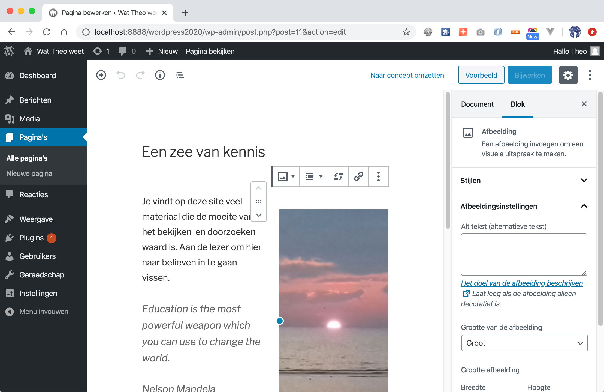

Inhoudsopgave
-
Voorpagina
vorige dia
-
Inhoudsopgave
met links naar de andere dia's
-
CMS
De betekenis
-
Voordelen CMS
-
Installatie WP
Aandachtspunten bij installatie op hosts.ma-cloud.nl
-
Inhoud toevoegen
werken met berichten, pagina's, menu's, widgets
-
Credits
bronnen voor de techniek achter deze presentatie
Dezelfde pagina in het Dashboard 
Content Management System
-
Inhoud wordt beheerd in een database
Er is niet alleen een splitsing van mark-up (HTML) en style (CSS) en gedrag (JS), maar ook van inhoud en presentatie
Het Dashboard in WordPress bestaat uit formulieren waarmee de gebruiker de database vult.
- Voor een CMS is dus een server nodig, en een database.
Voordelen WordPress als CMS
-
Meest gebruikte CMS
Veel ervaring, ondersteuning, wordt vaak gehost
- Veel plugins en thema's beschikbaar
-
Meerdere gebruikers op beheersniveau aan te maken.
Naast echte beheerders kunnen ook gebruikers inhoud bewerken, toevoegen en verwijderen - Bezoekers kunnen de site eenvoudig doorzoeken
- Menu is eenvoudig aan te passen
-
 Met WooCommerce-plugin is de site om te zetten in een webshop
Met WooCommerce-plugin is de site om te zetten in een webshop
Installatie WordPress
WordPress is trots op zijn snelle manier van installeren en configureren. Deze instructie laat zien dat het minutenwerk is.
Een WordPress installatie bestaat grofweg uit de volgende stappen:
(zie eventueel ook: https://topdesk.ma-net.nl/tas/public/ssp/content/detail/knowledgeitem?origin=newsSidebar&unid=8ac2a1a80f0f439ab5a5476e14d05c4d&news=true)
- Downloaden vanaf https://nl.wordpress.org/download/
- De download uitpakken en de map wordpress hernoemen naar iets anders
- De enorme hoeveelheid bestanden uploaden naar jouw gewenste plaats op hosts1.ma-cloud.nl of hosts2.ma-cloud.nl. Upload de map zelf met al zijn inhoud, zodat de root van je host vrijblijft voor je portfolio!
- Database user en nieuwe database aanmaken met bijvoorbeeld phpMyAdmin.
- De pagina van jouw WordPress-site laat een configuratie-formulier zien.
Vul deze in met onder andere- naam van de gemaakte database invullen
- de gebruikersnaam van de database van hosts.ma-cloud.nl invullen
- etc...
- Als dit geslaagd is, werkt WordPress en kun je als beheerder gebruikersnaam, wachtwoord en email ingeven.
Inleveren link WP installatie
-
Inleveren linkje in Magister
Zoek daarvoor bij de Studiewijzer CMS
-

Vervolg de instructie verder
Op ../wordPressInstructies.html staat het vervolg op deze instructie.
Je hebt de eerste stap al gedaan!! -
Onderwerp bedenken
Bedenk een onderwerp voor je blog. Dit kan van alles zijn, maar je moet 15 berichten kunnen verzinnen, die minstens over 3 categoriën te verdelen zijn. Denk voor je onderwerp bijvoorbeeld aan:
- muziek
- kunst
- sport
- front-end
- etc..